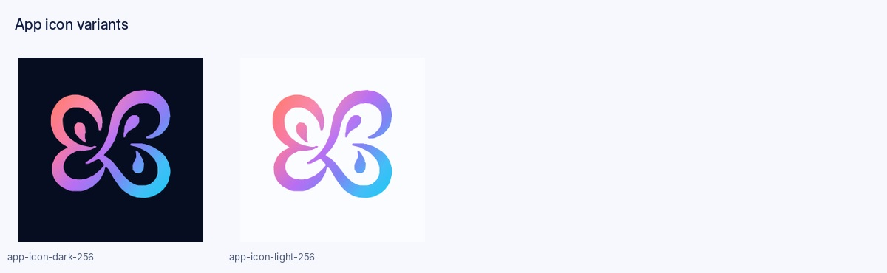
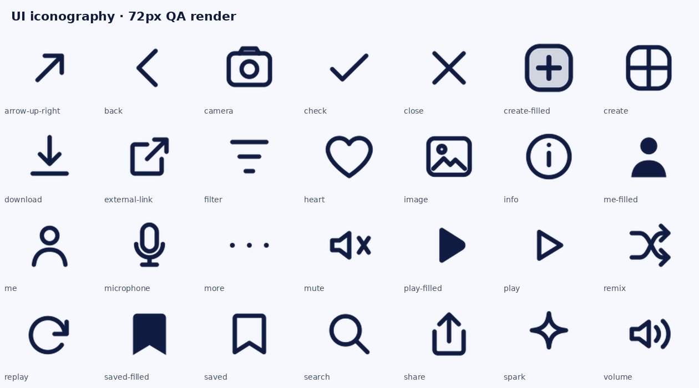
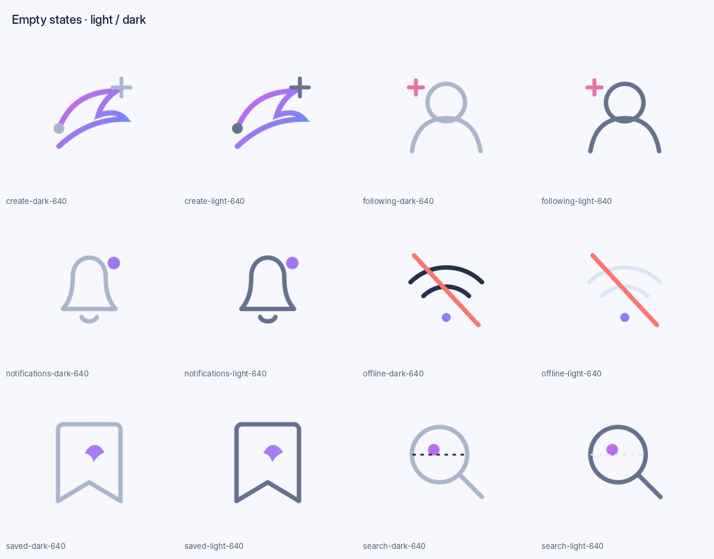
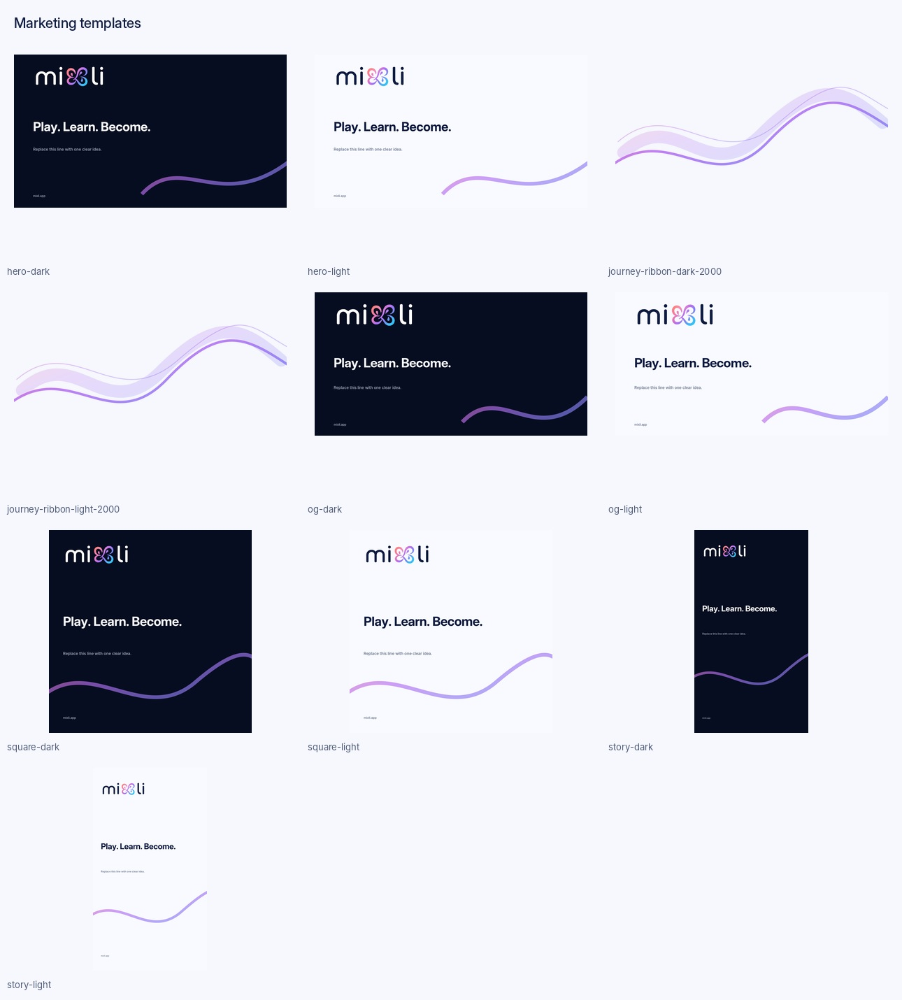

Mixli
PLAY · LEARN · BECOME

Identity
The four-loop mark is reconstructed from the approved final concept. The wordmark is custom outlined geometry and must never be replaced with typed text.
Color
Ink · #0F1B41
Play · #FF736D
Learn · #B76DF3
Transform · #7D82F4
Become · #25C5F4
App icons

UI iconography

Empty states

Marketing

Implementation
Use SVG for product icons and logos whenever possible. Icons are currentColor. Keep the gradient for identity and meaningful transformation moments; normal product chrome stays monochrome.